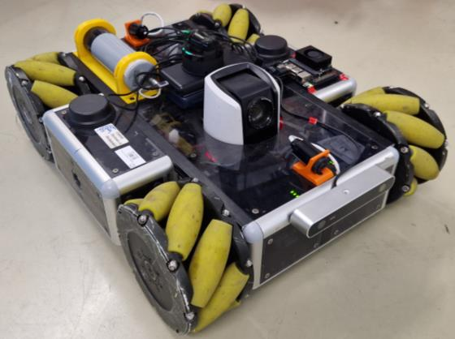

The pictures behind each section.
Existing photos and research imagery, with monochrome tones and dark overlays to match the website. No new image generation. Original files are unchanged.
Consultancy Services
Pejman leading a workshop with an audience of robotics participants.

Research
Non-repetitive LiDAR scan pattern, displayed in monochrome for the section cover.

Previous Projects
CHARMBot inspection robot with omnidirectional wheels and onboard sensors.
